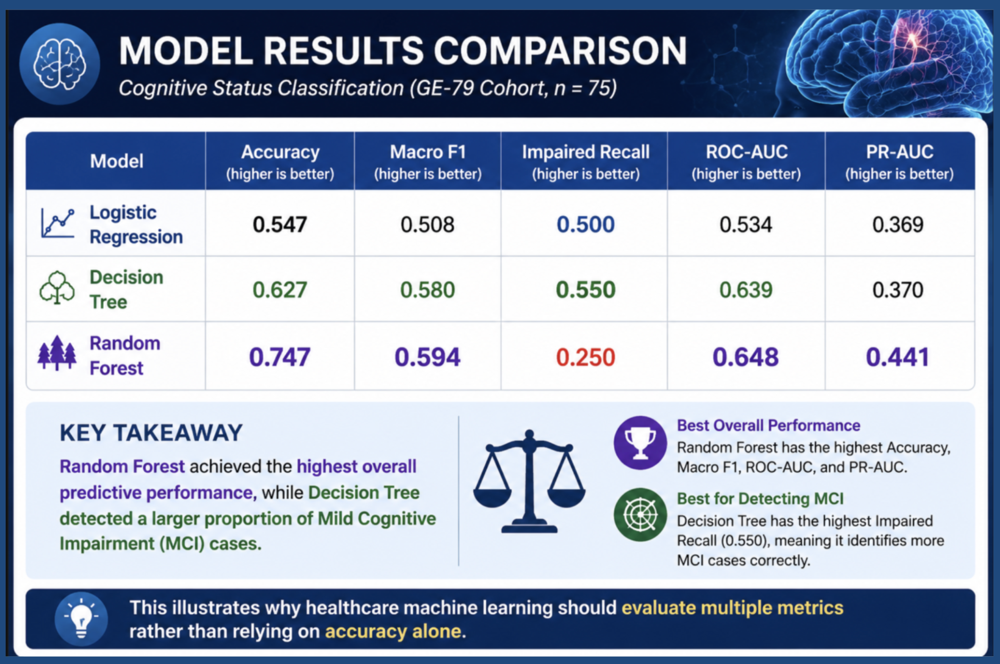
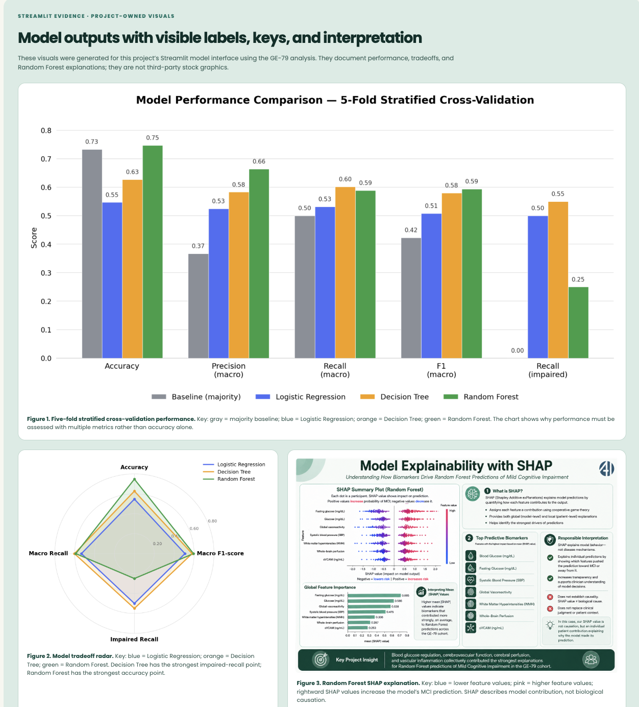

Clinical context
Type 2 Diabetes is associated with microvascular and white-matter changes that have been linked to cognitive decline.
AI4ALL IGNITE · GROUP 6C · SUMMER 2026
Research question: Can supervised ML models classify mild cognitive impairment in older adults with Type 2 Diabetes using clinical and MRI-derived biomarkers?
01 · QUESTION AND STUDY DESIGN
Research question: Can supervised ML models classify mild cognitive impairment in older adults with Type 2 Diabetes using clinical and MRI-derived biomarkers?
PROJECT VIDEO · OPTIONAL
Place a final MP4 under 10 minutes at assets/video/group-6c-presentation.mp4. GitHub Pages will display it here with standard playback controls.
Type 2 Diabetes is associated with microvascular and white-matter changes that have been linked to cognitive decline.
GE-79 supplied the primary cohort. GE-75 is reserved for future validation and was not merged into the training pipeline.
Binary target: No Impairment (MMSE ≥ 28) versus Impaired (MMSE 25–27).
COHORT COMPOSITION
There are more participants in the no-impairment group. A model can therefore appear strong while missing people in the smaller impaired class.
02 · METHODS
All classifiers received the same 14 selected features and were evaluated with five-fold stratified cross-validation, preserving class balance across folds.
Feature selection used stable Random Forest importance over 20 seeds, then retained literature-based science anchors. The final 14-feature set was shared across models to keep the comparison fair.
03 · RESULTS AND INTERPRETATION
Values below are transcribed from the live project dashboards. Each matrix has the same key: rows show actual class; columns show the model’s prediction.
How to read each confusion matrix: rows are the participant’s actual cognitive-status class; columns are the model’s predicted class. Green cells are correct classifications; coral cells are errors. This shared key applies to all three models.


MODEL 0 · FEATURE SELECTION
Random Forest ranking was averaged across 20 seeds, then combined with clinically motivated science anchors. This guards against an unstable short list in a small cohort.
Interpret carefully: higher mean |SHAP| shows a stronger average contribution to this Random Forest’s predictions; it does not establish that a biomarker causes MCI.
Source: project-owned Random Forest SHAP summary. Positive SHAP values push an individual prediction toward MCI; negative values push it away. Mean |SHAP| summarizes magnitude, not direction.
04 · IMPACT, BIAS, AND LIMITATIONS
This is a feasibility study, not clinical guidance. Model scores do not establish generalizability, causal effects, or readiness for patient care.
May favor the majority class and make accuracy look more reassuring than it is.
A single-site cohort may not represent other regions, communities, or care settings.
Device variation and imputation choices can introduce systematic error.
Available biomarkers and literature anchors reflect gaps in prior research.
PRACTICAL SAFEGUARDS
Leakage preventionStratified cross-validationMacro F1 + impaired recallSHAP explainabilityTransparent reportingPOTENTIAL VALUE
False positives can create unnecessary testing; false negatives can delay appropriate follow-up. Equity must be tested rather than assumed.
NEXT RESEARCH STEP
Use GE-75 for future validation work; pair explainability with longitudinal and causal analysis before considering any real-world use.
05 · PROJECT RESOURCES
TAKEAWAYS
REFERENCES